library(tidymodels)
library(tidyverse)
theme_set(theme_bw())
library(tidyclust)
library(embed)
# library(cluster)
library(dbscan)
library(ggdendro)
library(patchwork)
library(ggforce)
library(reshape2)Clustering
1 Library and Data
color_RUB_blue <- "#17365c"
color_RUB_green <- "#8dae10"
color_TUD_pink <- "#EC008D"
color_DRESDEN <- c("#03305D", "#28618C", "#539DC5", "#84D1EE", "#009BA4", "#13A983", "#93C356", "#BCCF02")df_Substance <- read.csv("../data_share/df_2010_bafg.csv", row.names = 1)2 EDA
We have loaded the data into a DataFrame. First, let’s have a look at the structure of the data.
As we can see, there might be datapoints/rows with some NaN values left. Since we only want to retain data with a valid date, we can drop all rows with date == NaN. Then, we inspect column the names and some of their contents.
# Drop rows where "date" is NA
df_Substance <- df_Substance[!is.na(df_Substance$date), ]
# Print all column names
print(paste("All columns:", paste(names(df_Substance), collapse = ", ")))[1] "All columns: sampling_location, river, matrix, sampling_type_discharge, date, unit_discharge, less_than_discharge, discharge, substance, sampling_type_conc, unit_conc, less_than_conc, conc, sampling_type_ph, unit_ph, less_than_ph, ph, load, datetime, year, month, dayofyear, lon, lat"# Sampling locations (title case)
unique(df_Substance$sampling_location) [1] "KAMPEN" "BISCHOFSHEIM" "KAHL AM MAIN"
[4] "KOBLENZ" "PALZEM" "MANNHEIM"
[7] "BAD HONNEF" "BIMMEN" "KARLSRUHE"
[10] "LAUTERBOURG-KARLSRUHE" "LOBITH" "MAASSLUIS"
[13] "MAINZ" "OEHNINGEN" "REKINGEN"
[16] "WEIL AM RHEIN" "WORMS" "KANZEM"
[19] "SAARBRUECKEN" "TREBUR-ASTHEIM" # Rivers (title case)
unique(df_Substance$river)[1] "IJSSEL" "MAIN" "MOSEL" "NECKAR" "RHEIN"
[6] "SAAR" "SCHWARZBACH"There are sampling locations as well as river names. The dataset’s main river is the Rhine, but there are also tributaries to the Rhine included. Some locations might also have multiple rivers:
# Rivers at the sampling location Koblenz
unique(df_Substance$river[df_Substance$sampling_location == "KOBLENZ"])[1] "MOSEL" "RHEIN"There are also two sampling locations that seem to be similar: Lauterbourg-Karlsruhe and Karlsruhe. We will check, if these are duplicates at a later point. For now we can make a mental note.
The three main data columns are ‘discharge’, ‘conc’, and ‘ph’. ‘discharge’ and ‘ph’ should be self explanatory. ‘conc’ holds the concentration of the substance in the column ‘substance’. Each of these has the corresponding data columns: unit_, less_than_ and sampling_type_ (which are less important for the pH value, but still included). unit_ and less_than_ denote the unit and give a hint to whether the measured value was below the level of detectability, respectively. less_than_ might be True or False; if it is False, the measured value could be quantified.
Let’s have a look at the units and substances.
# Discharge units
unique(df_Substance$unit_discharge)[1] "" "m³/s"# Concentration units
unique(df_Substance$unit_conc)[1] "µg/l" "" # Substances
unique(df_Substance$substance) [1] "As" "Pb" "Cd" "Cr" "K" "Ca" "Cu" "Mg" "Na" "Ni" "P" "Hg" "Zn" "" "AS"
[16] "B" "Fe" "Mn"For the discharge the unit is m³/s, but there are some rows, where there is no discharge recorded, so there is also NaN for these rows. For the concentration the unit is µg/L, but similar to discharge, there are some rows with NaN. In the dataset, there seems to be a total of 17 substances and NaN for the same reason as above. However there is ‘As’ and ‘AS’, which both stand for arsenic. We need to fix this.
df_Substance$substance[df_Substance$substance == "AS"] <- "As"
unique(df_Substance$substance) [1] "As" "Pb" "Cd" "Cr" "K" "Ca" "Cu" "Mg" "Na" "Ni" "P" "Hg" "Zn" "" "B"
[16] "Fe" "Mn"Looks much better now: we have a total of 16 substances and NaN.
df_substances <- df_Substance[!is.na(df_Substance$conc), ]
ggplot(df_substances, aes(x = conc)) +
geom_histogram(bins = 50, color = color_RUB_blue, fill = color_RUB_green) +
labs(
x = "Concentration (µg/L)",
y = "Count",
title = "Histogram of substance concentrations"
)
In the dataset there is a large quantity of concentrations below 0.1 µg/L. We still have the concentrations below detectability included. We do not know, what the exact values for the concentrations are in these cases, so we discard the respective rows.
df_substances_quant <- df_substances[df_substances$less_than_conc == "False", ]
ggplot(df_substances_quant, aes(x = conc)) +
geom_histogram(bins = 50, color = color_RUB_blue, fill = color_RUB_green) +
labs(
x = "Concentration (µg/L)",
y = "Count",
title = "Histogram of substance concentrations"
)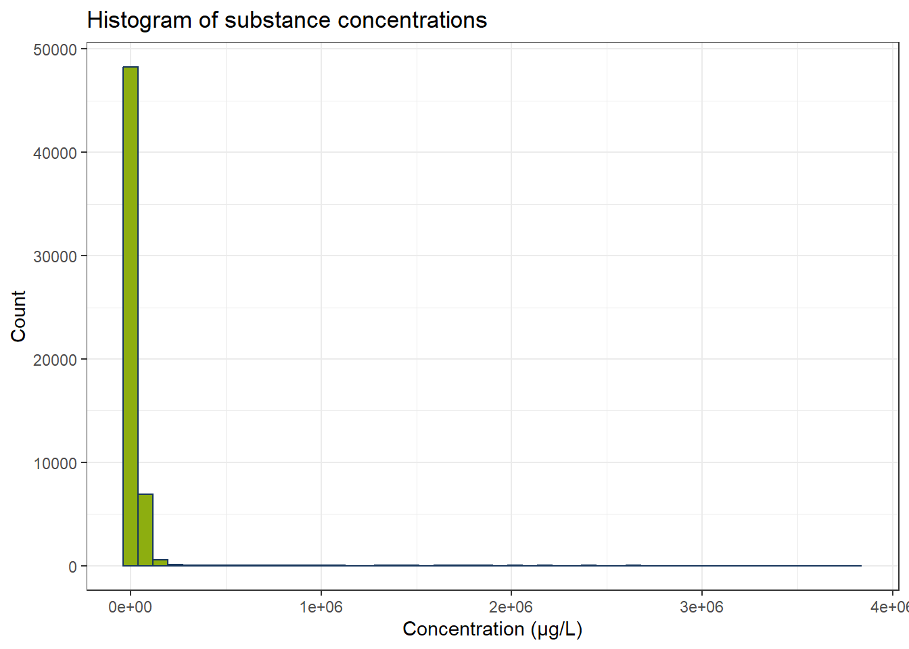
Now we fewer measurements and especially the concentrations below 0.1 µg/L have become fewer. There are still some possible outliers. Optional: We can use IQR to exclude these. Since every substance has its own concentration range, we have to calculate IQR for every substance independently.
all_substances <- unique(df_substances_quant$substance)
df_iqr <- do.call(rbind, lapply(all_substances, function(substance) {
df_sub <- df_substances_quant[df_substances_quant$substance == substance, ]
q1 <- quantile(df_sub$conc, 0.25, na.rm = TRUE)
q3 <- quantile(df_sub$conc, 0.75, na.rm = TRUE)
iqr_substance <- q3 - q1
lower <- q1 - 1.5 * iqr_substance
upper <- q3 + 1.5 * iqr_substance
df_sub[df_sub$conc >= lower & df_sub$conc <= upper, ]
}))
ggplot(df_iqr, aes(x = conc)) +
geom_histogram(bins = 50, color = color_RUB_blue, fill = color_RUB_green) +
labs(
x = "Concentration (µg/L)",
y = "Count",
title = "Histogram of substance concentrations"
)
One clustering application one might come to try out is to identify substance groups from concentrations, pH values, and discharge. Let’s first plot these values.
# Create a color palette
colors <- scales::hue_pal()(length(all_substances))
names(colors) <- all_substances
# Scatter plot: Discharge vs Concentration
gp_Concen1 <- ggplot(df_iqr, aes(x = discharge, y = conc, color = substance)) +
geom_point(alpha = 0.7) +
scale_color_manual(values = colors) +
labs(x = "Discharge (m³/s)", y = "Concentration (µg/L)") +
theme(legend.position = "right")
# Scatter plot: pH vs Concentration
gp_Concen2 <- ggplot(df_iqr, aes(x = ph, y = conc, color = substance)) +
geom_point(alpha = 0.7) +
scale_color_manual(values = colors) +
labs(x = "pH (-)", y = NULL) +
theme(legend.position = "none")
# Combine plots
gp_Concen1 + gp_Concen2 + plot_layout(guides = "collect")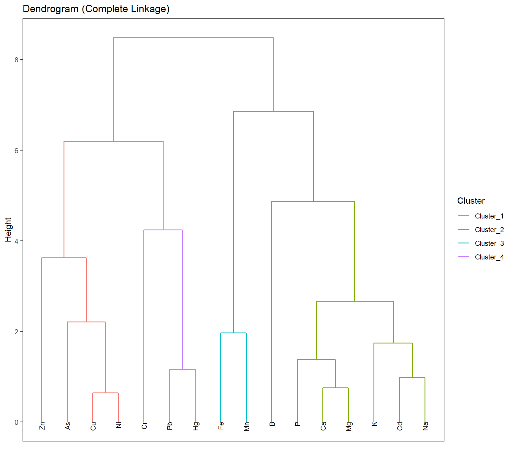
Since we already know the different substance groups, we can see, that they all share a similar space of concentration over discharge or pH. Here, trying to find the distinct substances from our numerical data would be a classification problem anyways, but the diagrams also show, that clustering would not be suitable since we see a lot of overlap.
There are still some unreasonable low pH values left that have to be removed. We still need to have a look at the possible duplicate data in Karlsruhe.
# Filter data
df_filtered <- df_iqr[df_iqr$ph > 2, ]
df_k <- df_filtered[df_filtered$sampling_location == "KARLSRUHE", ]
df_k_l <- df_filtered[df_filtered$sampling_location == "LAUTERBOURG-KARLSRUHE", ]
# Create as many colors as needed
colors <- scales::hue_pal()(length(all_substances))
names(colors) <- all_substances
# Plot: Karlsruhe
gp_Karl <- ggplot(df_k, aes(x = discharge, y = conc, color = substance)) +
geom_point(alpha = 0.7) +
scale_color_manual(values = colors) +
labs(title = "Karlsruhe", x = "Discharge (m³/s)", y = "Concentration (µg/L)") +
theme(legend.position = "right") +
ylim(-5000, 80000)
# Plot: Lauterbourg-Karlsruhe
gp_Laut <- ggplot(df_k_l, aes(x = discharge, y = conc, color = substance)) +
geom_point(alpha = 0.7) +
scale_color_manual(values = colors) +
labs(title = "Lauterbourg-Karlsruhe", x = "Discharge (m³/s)") +
theme(legend.position = "none",
axis.text.y = element_blank(),
axis.title.y = element_blank()) +
ylim(-5000, 80000)
# Combine plots
gp_Karl + gp_Laut + plot_layout(guides = "collect")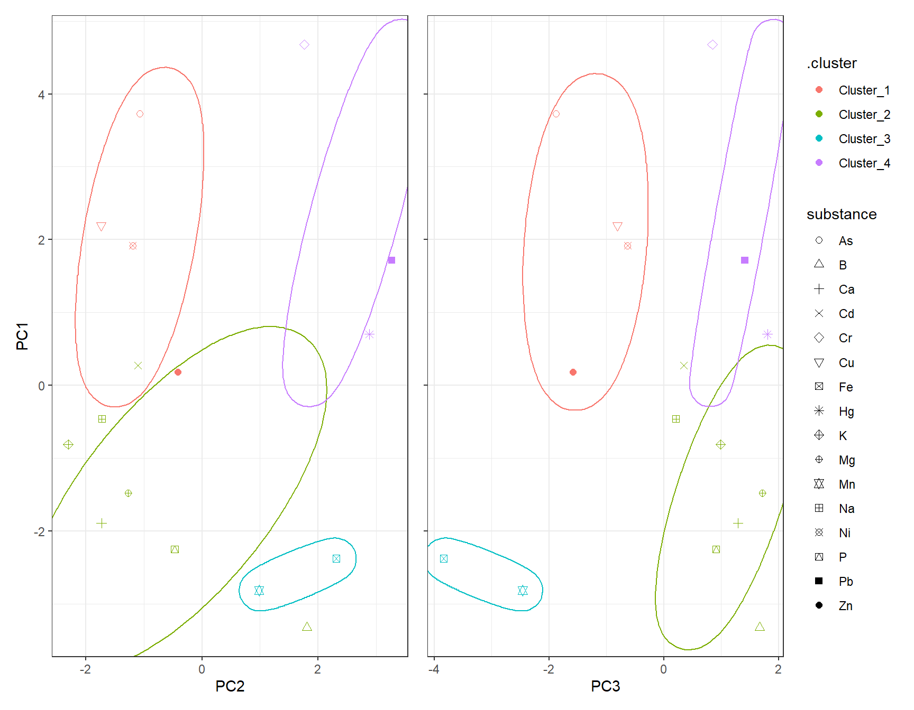
# Print unique rivers
unique(df_k$river)[1] NA "RHEIN"unique(df_k_l$river)[1] NA "RHEIN"From a visual perspective, the Karlsruhe subset seems to be included in the Lauterbourg-Karlsruhe data. For the intents of this exercise, visual inspection is enough here, and we discard the Karlsruhe subset.
2.1 Final data
df_final <- df_filtered[df_filtered$sampling_location != "KARLSRUHE", ]3 Unsupervised Learning – Source Allocation
Substances in the aquatic environment might have different emission sources and pathways. Some substances will have similar behaviour. To find and know such similarities greatly helps in modelling studies and regulatory policies. Since the groupings of similar substances are unknown to us, unsupervised learning can be applied. Several clustering techniques can aid us in finding groups. This works by comparing concentration profiles at different sampling locations.
In the following use PCA and UMAP to reduce the dimensionality of the data. Then cluster the scores of the respective substances using different clustering techniques. How many clusters should you choose? How does the clustering compare to your subjective visual inspection? How should the input data be scaled? How is the final clustering affected?
At the end, create a consesus matrix and interpret the results.
3.1 Feature engineering
First, the features have to be engineered. Each sampling location at each river is a feature for our substance observations. In this exercise we calculate the median of all concentration over the last ten year. NaN values are filled with 0.
3.2 Preprocessing
How should the features be scaled? Try out different techniques. How are they affecting the result?
df_PCA <- df_final
df_PCA <- df_PCA[df_PCA$year >= 2015, ]
# Create "site" combining sampling_location and river
df_PCA$site <- paste(df_PCA$sampling_location, df_PCA$river, sep = "_")
# Pivot to wide format with median concentrations
df_PCA_Summary <- df_PCA |>
group_by(site, substance) |>
summarize(conc_median = median(conc, na.rm = TRUE), .groups = "drop") |>
pivot_wider(names_from = substance, values_from = conc_median, values_fill = 0) |>
dplyr::select(-`NA`) |>
filter(site != "NA_NA")
mat_PCA_Summary <- df_PCA_Summary[,-1]
df_Clust_Substance <- t(mat_PCA_Summary) |> as.data.frame()
colnames(df_Clust_Substance) <- df_PCA_Summary$sitercp_Clust2 <- recipe(~ ., data = df_Clust_Substance) |>
step_YeoJohnson(all_predictors()) |> # ?????
step_normalize(all_predictors()) # normalize all columns
# Prep and bake
df_Clust_Normal <- prep(rcp_Clust2) |> bake(new_data = NULL)
rownames(df_Clust_Normal) <- rownames(df_Clust_Substance)
# Perform PCA
pca_Clust <- prcomp(df_Clust_Normal, scale. = FALSE) # already normalized
# Eigenvalues
eigen_Clust <- pca_Clust$sdev^2
# Scree plot
ggplot() +
geom_point(aes(x = 1:length(eigen_Clust), y = eigen_Clust)) +
geom_hline(yintercept = 1, linetype = "dashed", color = color_TUD_pink) +
labs(x = "PC", y = "Eigenvalue")
3.3 Number of Principal Components
Number of PCA components: if we use standardized data, we can use the Kaiser Criterion. Otherwise we can also choose the number of component as such that the PCA explains 95% of the variance.
# Recipe for PCA on clustering data
rcp_Clust_PCA <- recipe(~ ., data = df_Clust_Substance) |>
step_YeoJohnson(all_predictors()) |> # ?????
step_normalize(all_predictors()) |> # normalize all numeric columns
step_pca(all_predictors(), num_comp = 3) # keep first 4 PCs
# Prep and bake
df_Clust_PCA <- prep(rcp_Clust_PCA) |> bake(new_data = NULL)
df_Clust_Plot_PCA <- df_Clust_PCA
df_Clust_Plot_PCA$substance <- rownames(df_Clust_Substance)
ggplot(df_Clust_Plot_PCA, aes(x = .panel_x, y = .panel_y)) +
geom_point(aes(shape = substance), color = color_RUB_blue) +
scale_shape_manual(values = 1:length(unique(df_Clust_Plot_PCA$substance))) +
geom_autodensity(alpha = 0.8, fill = color_RUB_green, color = color_RUB_blue) +
facet_matrix(vars(-substance), layer.diag = 2)
4 Hierachical
# HIERARCHICAL CLUSTERING ------------
mdl_Hclust <- hier_clust(
num_clusters = 4,
linkage_method = "complete" # or "single", "average", "ward.D2"
) |>
set_engine("stats")
# Workflow
wflow_Hclust <- workflow() |>
add_recipe(rcp_Clust_PCA) |>
add_model(mdl_Hclust)
# Fit the model
fit_Hclust <- fit(wflow_Hclust, data = df_Clust_Substance)
# Extract cluster assignments
clst_Hclust <- fit_Hclust |>
extract_cluster_assignment()label_clst_Hclust <- clst_Hclust$.cluster
names(label_clst_Hclust) <- rownames(df_Clust_Substance)
mat_Dist <- dist(df_Clust_PCA)
df_Hc <- hclust(mat_Dist, method = "complete")
# Set labels (same order as df_Clust_Substance)
df_Hc$labels <- rownames(df_Clust_Substance)
# Convert to dendro format
dend_Data <- as.dendrogram(df_Hc) |> dendro_data()
df_clst_Match <- tibble(
label = dend_Data$labels$label,
cluster = label_clst_Hclust[dend_Data$labels$label]
)
# Join segment → label → cluster
df_Segment_Hclst <- dend_Data$segments %>%
left_join(dend_Data$labels %>% select(label, x), by = "x") %>%
left_join(df_clst_Match, by = "label")
# Fill NA cluster values upward in tree
df_Segment_Hclst$cluster <- zoo::na.locf(df_Segment_Hclst$cluster, fromLast = TRUE)
ggplot() +
geom_segment(data = df_Segment_Hclst,
aes(x = x, y = y, xend = xend, yend = yend,
color = factor(cluster)),
linewidth = 0.7) +
geom_text(data = dend_Data$labels,
aes(x = x, y = y, label = label),
hjust = 1, angle = 90, size = 3) +
labs(title = "Dendrogram (Complete Linkage)",
x = "", y = "Height", color = "Cluster") +
theme(axis.text.x = element_blank(),
axis.ticks.x = element_blank(),
panel.grid = element_blank())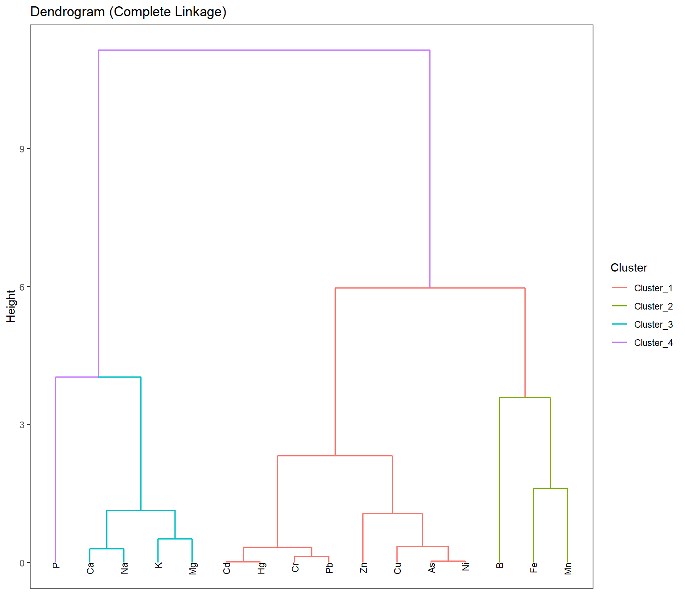
df_Hclust_Plot <- cbind(df_Clust_Plot_PCA, clst_Hclust)
# Scatter plot: PC1 vs PC2
gp_Hclust1 <- ggplot(df_Hclust_Plot, aes(x = PC2, y = PC1, color = .cluster, shape = substance)) +
geom_point(size = 2) +
scale_shape_manual(values = 1:length(unique(df_Clust_Plot_PCA$substance))) +
geom_mark_ellipse(aes(x = PC2, y = PC1, group = .cluster), alpha = 0.2, show.legend = FALSE) +
labs(x = "PC2", y = "PC1")
# Scatter plot: PC1 vs PC3
gp_Hclust2 <- ggplot(df_Hclust_Plot, aes(x = PC3, y = PC1, color = .cluster, shape = substance)) +
geom_point(size = 2) +
scale_shape_manual(values = 1:length(unique(df_Clust_Plot_PCA$substance))) +
geom_mark_ellipse(aes(x = PC3, y = PC1, group = .cluster), alpha = 0.2, show.legend = FALSE) +
labs(x = "PC3", y = "PC1")
gp_Hclust1 + (gp_Hclust2 + theme(axis.text.y = element_blank(),
axis.title.y = element_blank())) + plot_layout(guides = "collect")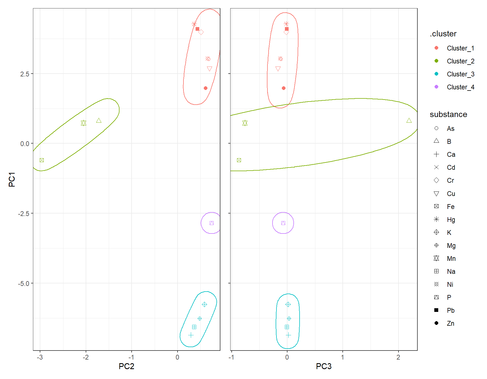
5 K-Means
To find the appropriate number of clusters, we can use the elbow test. If the elbow test does not work as expected, i.e. it does not flat out, we can still use the silhouette method.
df_Kmeans_Elbow <- tibble(k = 2:8, wss_value = NA)
df_Kmeans_Silhouette <- tibble(
k = 2:8,
avg_silhouette = NA
)
for (i in 2:8) {
set.seed(123)
fit_Temp <- workflow() |>
add_recipe(rcp_Clust_PCA) |>
add_model(k_means(num_clusters = i) |> set_engine("stats")) |>
fit(data = df_Clust_Substance)
df_Kmeans_Elbow$wss_value[df_Kmeans_Elbow$k == i] <- fit_Temp |>
extract_fit_engine() |>
pluck("tot.withinss")
clusters <- fit_Temp |> extract_cluster_assignment()
# Prepare PCA data
# Calculate silhouette scores
sil <- cluster::silhouette(as.numeric(clusters$.cluster), dist(df_Clust_PCA))
# Store average silhouette width
df_Kmeans_Silhouette$avg_silhouette[df_Kmeans_Silhouette$k == i] <-
mean(sil[, 3])
}# Plot elbow curve
ggplot(df_Kmeans_Elbow, aes(x = k, y = wss_value)) +
geom_line(color = color_RUB_blue) +
geom_point(color = color_RUB_green) +
labs(title = "Elbow Method",
x = "Number of Clusters (k)",
y = "Inertia (Within-Cluster Sum of Squares)")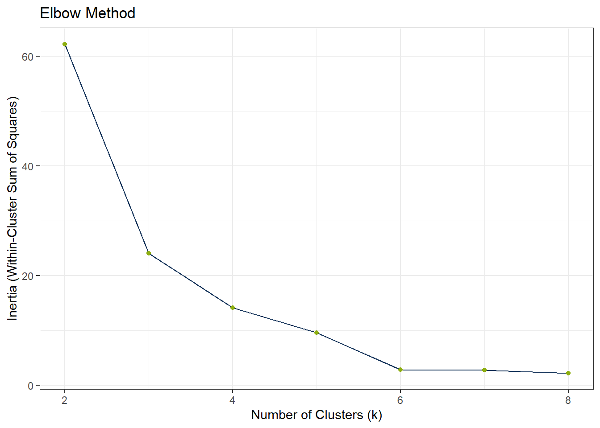
ggplot(df_Kmeans_Silhouette, aes(x = k, y = avg_silhouette)) +
geom_line(color = color_RUB_blue) +
geom_point(color = color_RUB_green) +
labs(
title = "Average Silhouette Score",
x = "Number of Clusters (k)",
y = "Average Silhouette Width"
)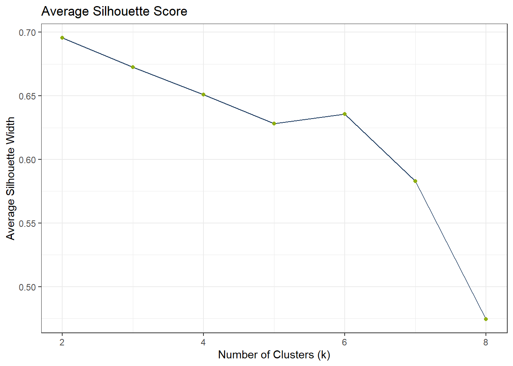
# Model specification
mdl_Kmeans <- k_means(num_clusters = 4)
# Workflow
wflow_Kmeans <- workflow() |>
add_recipe(rcp_Clust_PCA) |>
add_model(mdl_Kmeans)
# Fit the model
fit_Kmeans <- fit(wflow_Kmeans, data = df_Clust_Substance)
fit_Kmeans$fit$actions
$actions$model
$spec
K Means Cluster Specification (partition)
Main Arguments:
num_clusters = 4
Computational engine: stats
$formula
NULL
attr(,"class")
[1] "action_model" "action_fit" "action"
$fit
tidyclust cluster object
K-means clustering with 4 clusters of sizes 8, 3, 4, 1
Cluster means:
PC1 PC2 PC3
4 3.4205036 0.5357729 -0.06749066
3 0.3120363 -2.2480213 0.18604062
1 -6.3632349 0.4287831 0.01395718
2 -2.8471982 0.7427479 -0.07402531
Clustering vector:
[1] 1 2 3 1 1 2 3 3 2 3 4 1 1 1 1 1
Within cluster sum of squares by cluster:
[1] 5.3145651 8.1079259 0.7094945 0.0000000
(between_SS / total_SS = 95.2 %)
Available components:
[1] "cluster" "centers" "totss" "withinss" "tot.withinss"
[6] "betweenss" "size" "iter" "ifault"
attr(,"class")
[1] "stage_fit" "stage" # Extract cluster assignments
clst_Kmeans <- fit_Kmeans |>
extract_cluster_assignment()
clst_Kmeans_Centroids <- fit_Kmeans |> extract_centroids()df_Kmeans_Plot <- cbind(df_Clust_Plot_PCA, clst_Kmeans)
# Scatter plot: PC1 vs PC2
gp_Kmeans1 <- ggplot(df_Kmeans_Plot, aes(x = PC2, y = PC1, color = .cluster, shape = substance)) +
geom_point(size = 2) +
scale_shape_manual(values = 1:length(unique(df_Clust_Plot_PCA$substance))) +
geom_point(data = clst_Kmeans_Centroids,
aes(x = PC2, y = PC1, color = .cluster),
shape = "X", size = 4) +
geom_mark_ellipse(aes(x = PC2, y = PC1, group = .cluster), alpha = 0.2, show.legend = FALSE) +
labs(x = "PC2", y = "PC1")
# Scatter plot: PC1 vs PC3
gp_Kmeans2 <- ggplot(df_Kmeans_Plot, aes(x = PC3, y = PC1, color = .cluster, shape = substance)) +
geom_point(size = 2) +
scale_shape_manual(values = 1:length(unique(df_Clust_Plot_PCA$substance))) +
geom_point(data = clst_Kmeans_Centroids,
aes(x = PC3, y = PC1, color = .cluster),
shape = "X", size = 4) +
geom_mark_ellipse(aes(x = PC3, y = PC1, group = .cluster), alpha = 0.2, show.legend = FALSE) +
labs(x = "PC3", y = "PC1")
gp_Kmeans1 + (gp_Kmeans2 + theme(axis.text.y = element_blank(),
axis.title.y = element_blank())) + plot_layout(guides = "collect")
6 DBSCAN
# dbscan -----------
fit_DBSCAN <- dbscan(df_Clust_PCA, eps = 2, minPts = 2)
clst_DBSCAN <- paste0("Cluster_", fit_DBSCAN$cluster)
clst_DBSCAN[clst_DBSCAN == "Cluster_0"] <- NAdf_DBSCAN_Plot <- cbind(df_Clust_Plot_PCA, .cluster = clst_DBSCAN)
# Scatter plot: PC1 vs PC2
gp_DBSCAN1 <- ggplot(df_DBSCAN_Plot, aes(x = PC2, y = PC1, color = .cluster, shape = substance)) +
geom_point(size = 2) +
scale_shape_manual(values = 1:length(unique(df_Clust_Plot_PCA$substance))) +
geom_mark_ellipse(aes(x = PC2, y = PC1, group = .cluster), alpha = 0.2, show.legend = FALSE) +
labs(x = "PC2", y = "PC1")
# Scatter plot: PC1 vs PC3
gp_DBSCAN2 <- ggplot(df_DBSCAN_Plot, aes(x = PC3, y = PC1, color = .cluster, shape = substance)) +
geom_point(size = 2) +
scale_shape_manual(values = 1:length(unique(df_Clust_Plot_PCA$substance))) +
geom_mark_ellipse(aes(x = PC3, y = PC1, group = .cluster), alpha = 0.2, show.legend = FALSE) +
labs(x = "PC3", y = "PC1")
gp_DBSCAN1 + (gp_DBSCAN2 + theme(axis.text.y = element_blank(),
axis.title.y = element_blank())) + plot_layout(guides = "collect")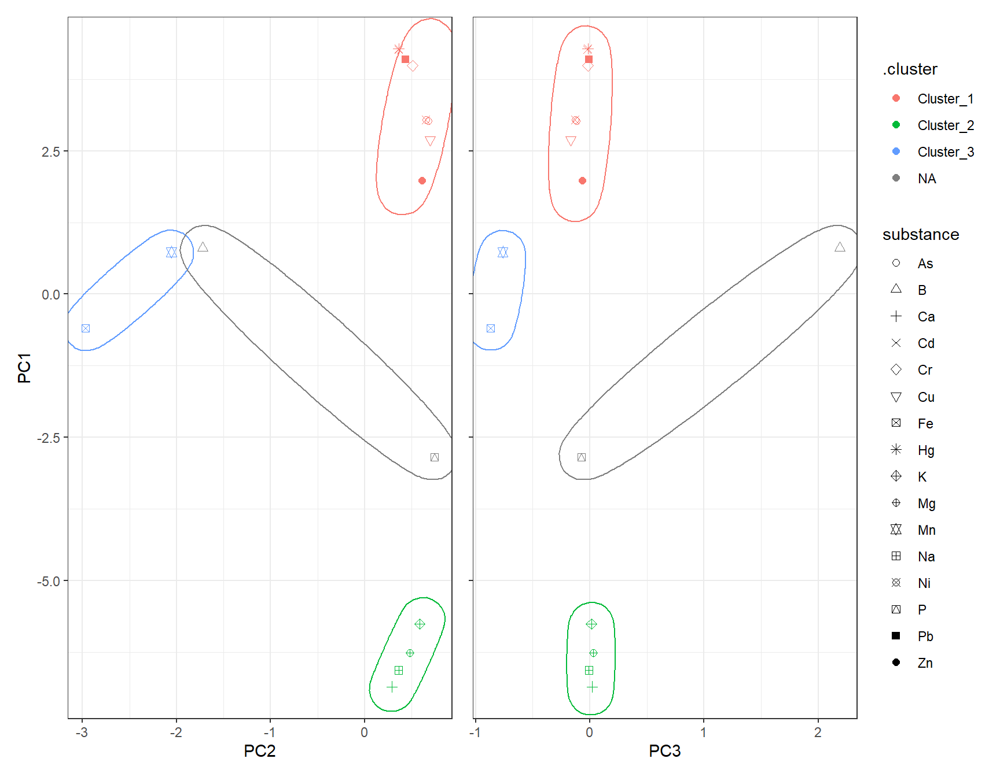
7 UMAP
Instead of PCA, one can also use UMAP for dimensionality reduction.
# Recipe for UMAP on clustering data
set.seed(42)
rcp_Clust_UMAP <- recipe(~ ., data = df_Clust_Substance) |>
step_YeoJohnson(all_predictors()) |> # ?????
step_normalize(all_predictors()) |> # normalize all numeric columns
step_umap(all_predictors(), num_comp = 3) # keep first 4 PCs
# Prep and bake
df_Clust_UMAP <- prep(rcp_Clust_UMAP) |> bake(new_data = NULL)
df_Clust_Plot_UMAP <- df_Clust_UMAP
df_Clust_Plot_UMAP$substance <- rownames(df_Clust_Substance)
ggplot(df_Clust_Plot_UMAP, aes(x = .panel_x, y = .panel_y)) +
geom_point(aes(shape = substance), color = color_RUB_blue) +
scale_shape_manual(values = 1:length(unique(df_Clust_Plot_UMAP$substance))) +
geom_autodensity(alpha = 0.8, fill = color_RUB_green, color = color_RUB_blue) +
facet_matrix(vars(-substance), layer.diag = 2)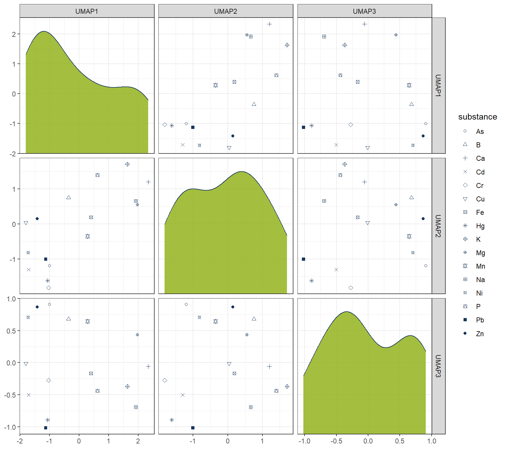
7.1 Hierachical
# HIERARCHICAL CLUSTERING ------------
mdl_Hclust <- hier_clust(
num_clusters = 4,
linkage_method = "complete" # or "single", "average", "ward.D2"
) |>
set_engine("stats")
# Workflow
wflow_Hclust_UMAP <- workflow() |>
add_recipe(rcp_Clust_UMAP) |>
add_model(mdl_Hclust)
# Fit the model
fit_Hclust_UMAP <- fit(wflow_Hclust_UMAP, data = df_Clust_Substance)
# Extract cluster assignments
clst_Hclust_UMAP <- fit_Hclust_UMAP |>
extract_cluster_assignment()label_clst_Hclust_UMAP <- clst_Hclust_UMAP$.cluster
names(label_clst_Hclust_UMAP) <- rownames(df_Clust_Substance)
mat_Dist_UMAP <- dist(df_Clust_UMAP)
df_Hc_UMAP <- hclust(mat_Dist_UMAP, method = "complete")
# Set labels (same order as df_Clust_Substance)
df_Hc_UMAP$labels <- rownames(df_Clust_Substance)
# Convert to dendro format
dend_Data_UMAP <- as.dendrogram(df_Hc_UMAP) |> dendro_data()
df_clst_Match_UMAP <- tibble(
label = dend_Data_UMAP$labels$label,
cluster = label_clst_Hclust_UMAP[dend_Data_UMAP$labels$label]
)
# Join segment → label → cluster
df_Segment_Hclst_UMAP <- dend_Data_UMAP$segments %>%
left_join(dend_Data_UMAP$labels %>% dplyr::select(label, x), by = "x") %>%
left_join(df_clst_Match_UMAP, by = "label")
# Fill NA cluster values upward in tree
df_Segment_Hclst_UMAP$cluster <- zoo::na.locf(df_Segment_Hclst_UMAP$cluster, fromLast = TRUE)
ggplot() +
geom_segment(data = df_Segment_Hclst_UMAP,
aes(x = x, y = y, xend = xend, yend = yend,
color = factor(cluster)),
linewidth = 0.7) +
geom_text(data = dend_Data_UMAP$labels,
aes(x = x, y = y, label = label),
hjust = 1, angle = 90, size = 3) +
labs(title = "Dendrogram (Complete Linkage)",
x = "", y = "Height", color = "Cluster") +
theme(axis.text.x = element_blank(),
axis.ticks.x = element_blank(),
panel.grid = element_blank())
df_Hclust_Plot_UMAP <- cbind(df_Clust_Plot_UMAP, clst_Hclust_UMAP)
# Scatter plot: UMAP1 vs UMAP2
gp_Hclust1_UMAP <- ggplot(df_Hclust_Plot_UMAP, aes(x = UMAP2, y = UMAP1, color = .cluster, shape = substance)) +
geom_point(size = 2) +
scale_shape_manual(values = 1:length(unique(df_Clust_Plot_UMAP$substance))) +
geom_mark_ellipse(aes(x = UMAP2, y = UMAP1, group = .cluster), alpha = 0.2, show.legend = FALSE) +
labs(x = "UMAP2", y = "UMAP1")
# Scatter plot: UMAP1 vs UMAP3
gp_Hclust2_UMAP <- ggplot(df_Hclust_Plot_UMAP, aes(x = UMAP3, y = UMAP1, color = .cluster, shape = substance)) +
geom_point(size = 2) +
scale_shape_manual(values = 1:length(unique(df_Clust_Plot_UMAP$substance))) +
geom_mark_ellipse(aes(x = UMAP3, y = UMAP1, group = .cluster), alpha = 0.2, show.legend = FALSE) +
labs(x = "UMAP3", y = "UMAP1")
gp_Hclust1_UMAP + (gp_Hclust2_UMAP + theme(axis.text.y = element_blank(),
axis.title.y = element_blank())) + plot_layout(guides = "collect")
7.2 K-Means
7.2.1 k test
df_Kmeans_Elbow_UMAP <- tibble(k = 2:8, wss_value = NA)
df_Kmeans_Silhouette_UMAP <- tibble(
k = 2:8,
avg_silhouette = NA
)
for (i in 2:8) {
set.seed(666)
fit_Temp <- workflow() |>
add_recipe(rcp_Clust_UMAP) |>
add_model(k_means(num_clusters = i) |> set_engine("stats")) |>
fit(data = df_Clust_Substance)
df_Kmeans_Elbow_UMAP$wss_value[df_Kmeans_Elbow$k == i] <- fit_Temp |>
extract_fit_engine() |>
pluck("tot.withinss")
clusters <- fit_Temp |> extract_cluster_assignment()
# Prepare UMAPA data
# Calculate silhouette scores
sil <- cluster::silhouette(as.numeric(clusters$.cluster), dist(df_Clust_UMAP))
# Store average silhouette width
df_Kmeans_Silhouette_UMAP$avg_silhouette[df_Kmeans_Silhouette$k == i] <-
mean(sil[, 3])
}# Plot elbow curve
ggplot(df_Kmeans_Elbow_UMAP, aes(x = k, y = wss_value)) +
geom_line(color = color_RUB_blue) +
geom_point(color = color_RUB_green) +
labs(title = "Elbow Method",
x = "Number of Clusters (k)",
y = "Inertia (Within-Cluster Sum of Squares)")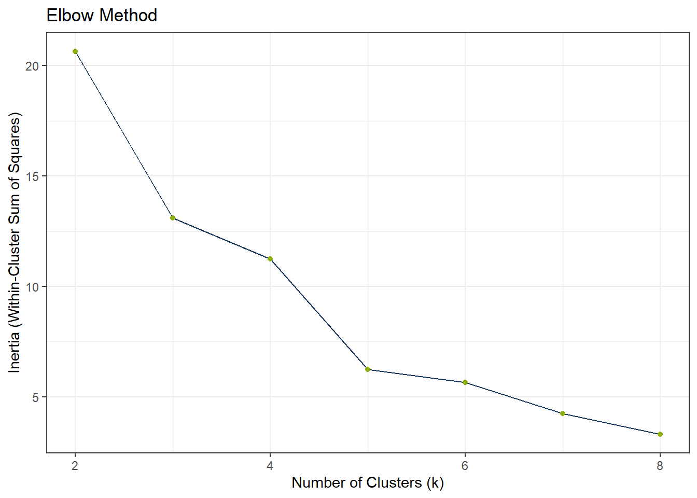
ggplot(df_Kmeans_Silhouette_UMAP, aes(x = k, y = avg_silhouette)) +
geom_line(color = color_RUB_blue) +
geom_point(color = color_RUB_green) +
labs(
title = "Average Silhouette Score",
x = "Number of Clusters (k)",
y = "Average Silhouette Width"
)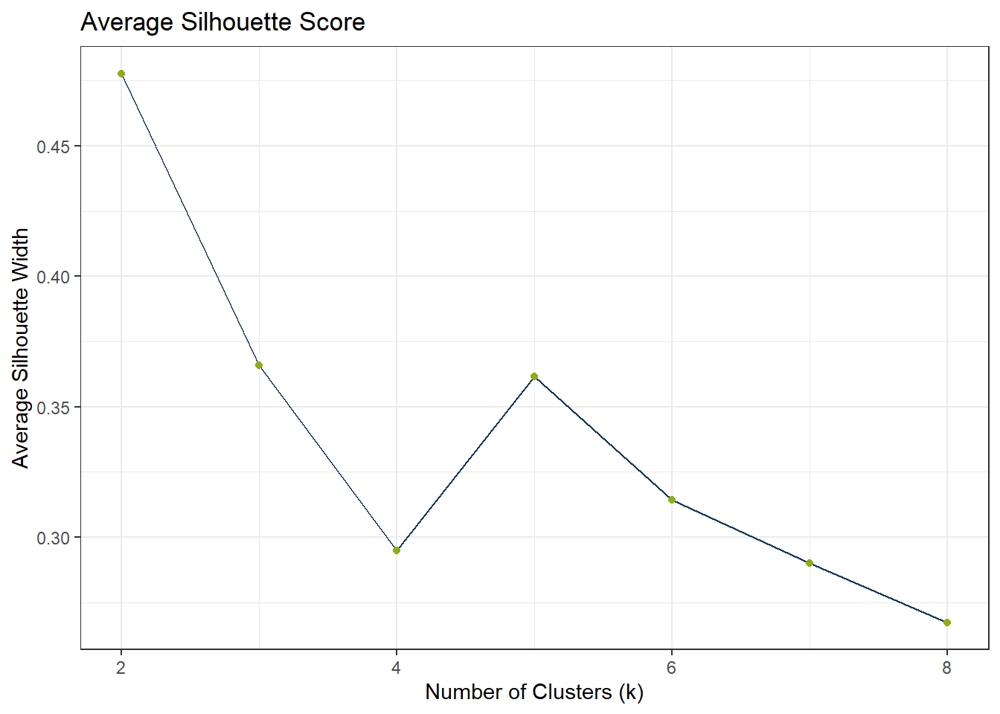
# Model specification
mdl_Kmeans <- k_means(num_clusters = 4)
# Workflow
wflow_Kmeans <- workflow() |>
add_recipe(rcp_Clust_UMAP) |>
add_model(mdl_Kmeans)
# Fit the model
fit_Kmeans_UMAP <- fit(wflow_Kmeans, data = df_Clust_Substance)
fit_Kmeans_UMAP$fit$actions
$actions$model
$spec
K Means Cluster Specification (partition)
Main Arguments:
num_clusters = 4
Computational engine: stats
$formula
NULL
attr(,"class")
[1] "action_model" "action_fit" "action"
$fit
tidyclust cluster object
K-means clustering with 4 clusters of sizes 4, 3, 5, 4
Cluster means:
UMAP1 UMAP2 UMAP3
2 -1.485931 -0.4565657 0.6184530
1 0.107790 0.1963375 0.3870043
4 1.694379 1.1024476 -0.2248595
3 -1.233836 -1.4374852 -0.6717862
Clustering vector:
[1] 1 2 3 4 1 2 3 3 2 3 3 1 1 4 4 4
Within cluster sum of squares by cluster:
[1] 2.236076 1.403089 3.421381 1.043195
(between_SS / total_SS = 85.6 %)
Available components:
[1] "cluster" "centers" "totss" "withinss" "tot.withinss"
[6] "betweenss" "size" "iter" "ifault"
attr(,"class")
[1] "stage_fit" "stage" # Extract cluster assignments
clst_Kmeans_UMAP <- fit_Kmeans_UMAP |>
extract_cluster_assignment()
clst_Kmeans_Centroids_UMAP <- fit_Kmeans_UMAP |> extract_centroids()df_Kmeans_Plot_UMAP <- cbind(df_Clust_Plot_UMAP, clst_Kmeans_UMAP)
# Scatter plot: UMAP1 vs UMAP2
gp_Kmeans1_UMAP <- ggplot(df_Kmeans_Plot_UMAP, aes(x = UMAP2, y = UMAP1, color = .cluster, shape = substance)) +
geom_point(size = 2) +
scale_shape_manual(values = 1:length(unique(df_Clust_Plot_UMAP$substance))) +
geom_point(data = clst_Kmeans_Centroids_UMAP,
aes(x = UMAP2, y = UMAP1, color = .cluster),
shape = "X", size = 4) +
geom_mark_ellipse(aes(x = UMAP2, y = UMAP1, group = .cluster), alpha = 0.2, show.legend = FALSE) +
labs(x = "UMAP2", y = "UMAP1")
# Scatter plot: UMAP1 vs UMAP3
gp_Kmeans2_UMAP <- ggplot(df_Kmeans_Plot_UMAP, aes(x = UMAP3, y = UMAP1, color = .cluster, shape = substance)) +
geom_point(size = 2) +
scale_shape_manual(values = 1:length(unique(df_Clust_Plot_UMAP$substance))) +
geom_point(data = clst_Kmeans_Centroids_UMAP,
aes(x = UMAP3, y = UMAP1, color = .cluster),
shape = "X", size = 4) +
geom_mark_ellipse(aes(x = UMAP3, y = UMAP1, group = .cluster), alpha = 0.2, show.legend = FALSE) +
labs(x = "UMAP3", y = "UMAP1")
gp_Kmeans1_UMAP + (gp_Kmeans2_UMAP + theme(axis.text.y = element_blank(),
axis.title.y = element_blank())) + plot_layout(guides = "collect")
7.3 DBSCAN
# dbscan -----------
fit_DBSCAN_UMAP <- dbscan(df_Clust_UMAP, eps = 1, minPts = 2)
clst_DBSCAN_UMAP <- paste0("Cluster_", fit_DBSCAN_UMAP$cluster)
clst_DBSCAN_UMAP[clst_DBSCAN_UMAP == "Cluster_0"] <- NAdf_DBSCAN_Plot_UMAP <- cbind(df_Clust_Plot_UMAP, .cluster = clst_DBSCAN_UMAP)
# Scatter plot: UMAP1 vs UMAP2
gp_DBSCAN1_UMAP <- ggplot(df_DBSCAN_Plot_UMAP, aes(x = UMAP2, y = UMAP1, color = .cluster, shape = substance)) +
geom_point(size = 2) +
scale_shape_manual(values = 1:length(unique(df_Clust_Plot_UMAP$substance))) +
geom_mark_ellipse(aes(x = UMAP2, y = UMAP1, group = .cluster), alpha = 0.2, show.legend = FALSE) +
labs(x = "UMAP2", y = "UMAP1")
# Scatter plot: UMAP1 vs UMAP3
gp_DBSCAN2_UMAP <- ggplot(df_DBSCAN_Plot_UMAP, aes(x = UMAP3, y = UMAP1, color = .cluster, shape = substance)) +
geom_point(size = 2) +
scale_shape_manual(values = 1:length(unique(df_Clust_Plot_UMAP$substance))) +
geom_mark_ellipse(aes(x = UMAP3, y = UMAP1, group = .cluster), alpha = 0.2, show.legend = FALSE) +
labs(x = "UMAP3", y = "UMAP1")
gp_DBSCAN1_UMAP + (gp_DBSCAN2_UMAP + theme(axis.text.y = element_blank(),
axis.title.y = element_blank())) + plot_layout(guides = "collect")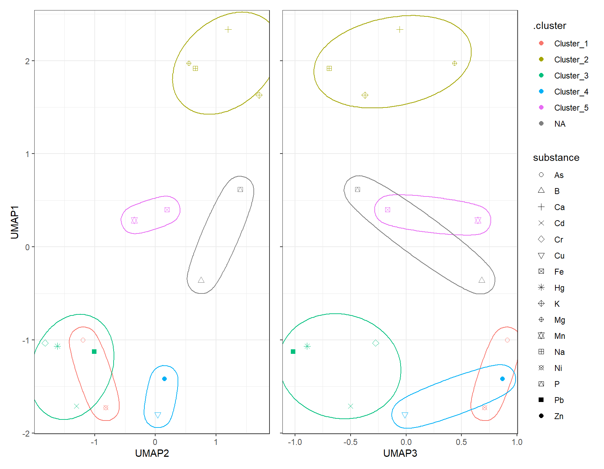
8 Consensus Matrix – Co-clustering of substances
mat_Clust <- as.matrix(df_Clust_Normal)
int_K <- 4
n_Obsevation <- nrow(mat_Clust)
mat_Consensus <- matrix(0, n_Obsevation, n_Obsevation)
n_Run <- 100
for (i_Run in 1:n_Run) {
# you can choose any clustering algorithm (kmeans, pam, hclust)
fit <- kmeans(mat_Clust, centers = int_K)
clst_Km <- fit$cluster
# update mat_Consensus matrix
for (i in 1:n_Obsevation) {
for (j in 1:n_Obsevation) {
if (clst_Km[i] == clst_Km[j]) mat_Consensus[i, j] <- mat_Consensus[i, j] + 1
}
}
}
# normalize to 0–1
mat_Consensus <- mat_Consensus / n_Run
rownames(mat_Consensus) <- rownames(df_Clust_Normal)
colnames(mat_Consensus) <- rownames(df_Clust_Normal)
# melt matrix
df_Consensus_Plot <- melt(mat_Consensus)
colnames(df_Consensus_Plot) <- c("Substance1", "Substance2", "Prob")
# optional: order substances by hierarchical clustering
hc_Con <- hclust(dist(mat_Consensus))
idx_Order <- hc_Con$labels[hc_Con$order]
df_Consensus_Plot$Substance1 <- factor(df_Consensus_Plot$Substance1, levels = idx_Order)
df_Consensus_Plot$Substance2 <- factor(df_Consensus_Plot$Substance2, levels = idx_Order)
# heatmap
ggplot(df_Consensus_Plot, aes(Substance1, Substance2, fill = Prob)) +
geom_tile(color = "grey96") +
scale_fill_gradientn("Co-clustering\nProbability", colors = color_DRESDEN[-c(1:3)]) +
coord_fixed(ratio = 1, expand = FALSE) +
theme(axis.title.x = element_blank(),
axis.title.y = element_blank(),
axis.text.x = element_text(angle = 90, hjust = 1))